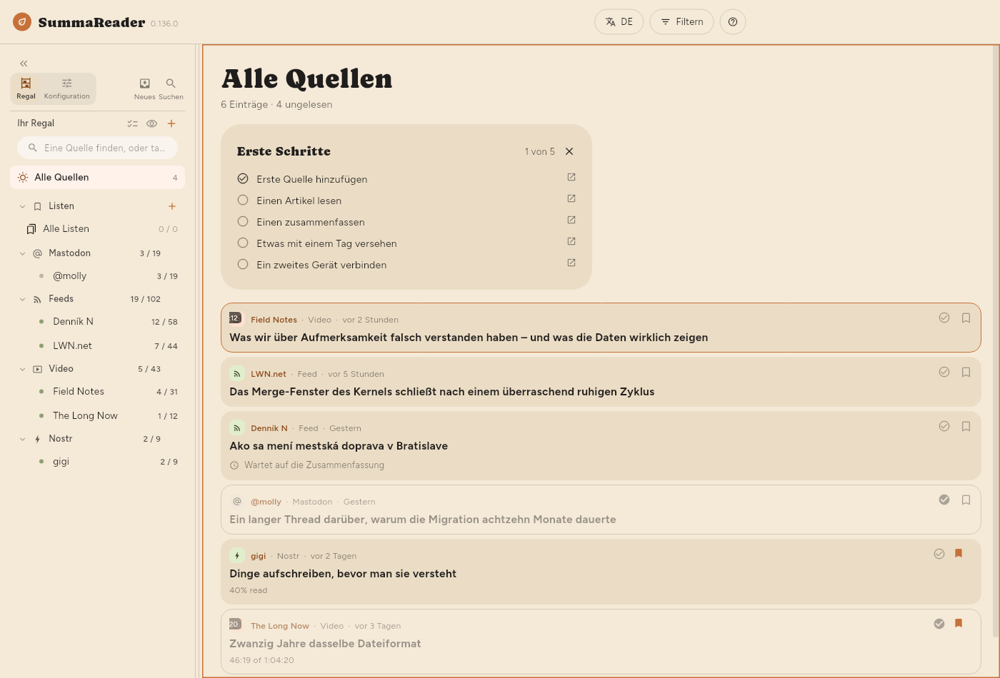
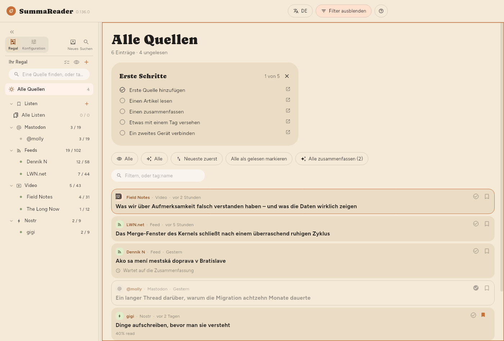
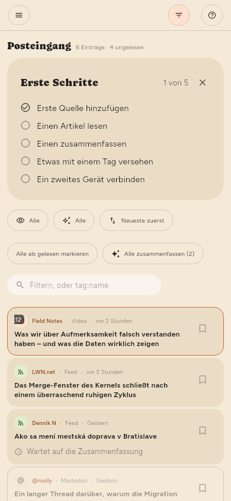

← Loslegen · Inhalt · Lesen →
Das Fenster

Die obere Leiste
| Element | Was es tut |
|---|---|
| DE | Die Sprache der Oberfläche |
| Filtern | Zeigt und verbirgt das Filterfeld |
| ? | Hilfe zu dem, was auf dem Bildschirm ist |
Filtern erscheint, solange die Liste auf dem Bildschirm ist — auch wenn ein Artikel daneben offen ist. Die Schaltfläche wird ausgefüllt und heißt Gefiltert, sobald etwas die Liste eingrenzt. So sagt eine Liste, die nur einen Teil von sich zeigt, immer, warum. Auf einem Smartphone öffnet ☰ das Regal, und Filtern ist die Schaltfläche neben ?.
Das Regal
Links oben: zwei Reiter, Regal und Konfiguration, die wechseln, was das Regal zeigt, und drei Symbole, Jetzt synchronisieren (nur bei eingeschalteter Synchronisierung), Nach Neuem suchen und Suchen. Unter Regal: Ihr Regal mit dem Suchfeld, Alle Quellen, Ihre Listen mit Alle Listen zuerst und Ihre Feeds, nach Art gruppiert. Unter Konfiguration: Über mit der Version, dann Grundlegend und Erweitert. Jeder Feed zeigt ungelesen / gesamt, jede Liste zeigt, was sie enthält. Auf einem Smartphone ist das Regal eine Schublade, die Sie mit ☰ öffnen.
- Nach Neuem suchen ruft sofort alle Quellen ab. Solange es läuft, dreht sich sein Symbol.
- Alle Quellen zeigt die Artikel aller Quellen, ohne gewählten Feed.
- Alle Listen zeigt, was auf allen Listen zugleich steht.
- Das Feld oben grenzt nur das Regal ein: ein Teil des Namens eines Feeds oder
tag:und ein Teil eines Schlagworts. Ein Teil genügt,tag:gamfindet alsogamingebenso wieretro-gaming— und ein kurzes Wort trifft viel, denntag:aifindet auch einen Feed mit dem Schlagwortretail, und!tag:aiblendet ihn aus. Das Textfeld im Filterfeld braucht das ganze Schlagwort. - Ein Klick auf einen Feed zeigt nur diesen Feed.
- Ein Klick auf eine Liste zeigt, was darauf steht — siehe Dinge aufbewahren.
- Mehrere auswählen (die Häkchen neben Ihr Regal) oder langes Drücken auf eine Zeile zeigt an jedem Feed ein Zahnrad. Das Zahnrad öffnet das eigene Feld dieses Feeds — siehe Quellen verwalten.
- Das Auge neben + blendet jeden Feed aus, in dem nichts wartet.
- « klappt das Regal zu einem Streifen aus Symbolen ein.
btut dasselbe.
Das Filterfeld
Drücken Sie Filtern. Alles, was bestimmt, was die Liste zeigt, steht hier. Es ist standardmäßig geschlossen, damit unter der Überschrift als Erstes der erste Artikel steht.


| Element | Was es tut |
|---|---|
| Ungelesen / Gelesen / Alle | Welche Einträge gezeigt werden |
| Alle / Zusammengefasst / Nicht zusammengefasst | Ob es eine Zusammenfassung gibt |
| Neueste zuerst | Sortierung — drücken, um durch sechs zu schalten |
| Alle als gelesen markieren | Markiert alles, was der Filter erfasst |
| Alle zusammenfassen | Fasst alles zusammen, was der Filter erfasst |
| Chips für die Art | Videos, Feeds, Beiträge — klicken zum Eingrenzen |
| Das Textfeld | Findet ein Wort in Titel, Quelle oder Zusammenfassung, oder tag:name |
Die Sortierung schaltet weiter: Neueste zuerst → Älteste zuerst → Titel A–Z → Titel Z–A → Feed A–Z → Feed Z–A und wieder von vorn.
Der Lesefilter, der Zusammenfassungsfilter und die Sortierung bleiben über Neustarts hinweg erhalten. Die Wahl eines Feeds nicht — das ist Navigation, und wer in eine Bibliothek startet, die auf einen letzte Woche gewählten Feed eingegrenzt ist, hält die App für leer.
Die Zahlen unter „Alle Quellen“
18 von 5.878 angezeigt · 52 ungelesen · 812 zusammenzufassen
- Angezeigt erscheint nur, wenn ein Filter eingrenzt, und zählt die Zeilen, die wirklich auf dem Bildschirm sind.
- zusammenzufassen ist dieselbe Zahl wie auf der Schaltfläche zum Zusammenfassen und genau das, was ein Druck darauf tun würde.
Wie die Liste aussieht
| Einstellung | Wo |
|---|---|
| Schriftgröße | Konfiguration › Grundlegend › Darstellung › Text › Schriftgröße |
| Listendichte | Konfiguration › Grundlegend › Darstellung › Liste › Listendichte |
| Die Liste „Erste Schritte“ zeigen | Konfiguration › Grundlegend › Darstellung › Liste › Die Liste „Erste Schritte“ zeigen |
| Zusammenfassung in der Liste | Konfiguration › Grundlegend › Darstellung › Liste › Zusammenfassung in der Liste |
| Vorschaubilder | Konfiguration › Grundlegend › Darstellung › Liste › Vorschaubilder |
| Zeilenabstand, Spaltenbreite | Konfiguration › Grundlegend › Darstellung › Artikel |
| Wo der Artikel steht | Konfiguration › Grundlegend › Darstellung › Anordnung |
| Nach Quelle gruppieren | Konfiguration › Grundlegend › Darstellung › Liste › Nach Quelle gruppieren |
Listendichte bestimmt, wie viel von jedem Eintrag die Liste zeichnet:
| Zusammenfassung | Titel | Bild | |
|---|---|---|---|
| Bequem | gezeigt | bricht frei um | groß |
| Kompakt (Standard) | — | zwei Zeilen | klein |
| Dicht | — | eine Zeile | keins |
Bei Bequem legt Zusammenfassung in der Liste (Konfiguration › Grundlegend › Darstellung › Liste › Zusammenfassung in der Liste) fest, wie viel von jeder Zusammenfassung eine Zeile zeigt: 2 Zeilen, 4 Zeilen oder die Ganze Zusammenfassung (Standard). Ein Artikel ohne Zusammenfassung zeigt an derselben Stelle, blasser und mit derselben Grenze, seinen Anfang: die eigene Beschreibung der Quelle oder sonst die ersten Worte des Artikeltextes. Die Zeile erscheint nur bei Bequem, denn Kompakt und Dicht zeigen keine Zusammenfassung.
Vorschaubilder: Bild zeigt das eigene Bild jedes Artikels statt eines Symbols für die Art. Nur diese der drei Optionen kostet etwas: Die Bilder werden für die Zeilen auf dem Bildschirm einige wenige auf einmal geladen, ein langer Rückstand füllt sich also nach und nach statt auf einen Schlag. Dicht ignoriert die Einstellung — ein Bild ist drei Zeilen hoch, und das ist nicht dicht.
← Loslegen · Inhalt · Lesen →